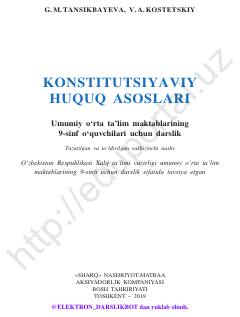

KH9-sinf o'quvchilari uchun Konstitutsiyaviy huquq asoslari darsligi.
Ushbu darslik umumiy o'rta ta'lim maktablarining 9-sinf o'quvchilari uchun mo'ljallangan bo'lib, konstitutsiyaviy huquq asoslari, O'zbekiston Respublikasining Asosiy Qonuni va uning jamiyat hayotidagi o'rnini tushuntiradi. Kitobda fuqarolarning huquq va burchlari, davlat organlari faoliyati hamda qonunchilik tizimining huquqiy asoslari haqida batafsil ma'lumot beriladi.